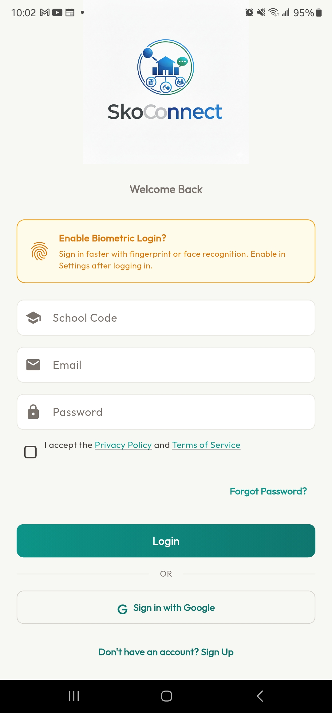
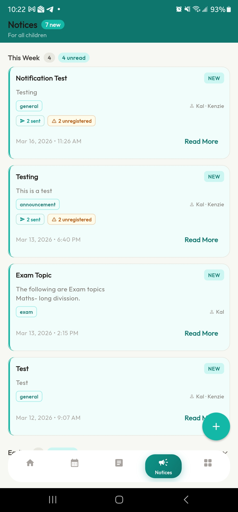
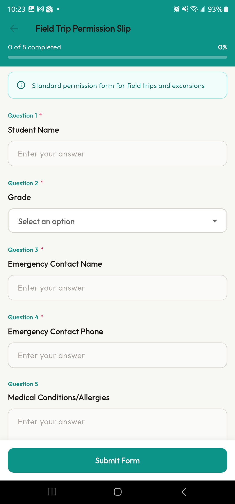

2026-04-05
SkoConnect Documentation v1.0 | Last updated: 2026-04-02
This guide covers everything you can do as a parent in the SkoConnect mobile app. SkoConnect is your direct connection to your child’s school — you’ll find notices, events, forms, and emergency alerts all in one place.
As a parent, you can:
| Feature | What You Can Do |
|---|---|
| Home Screen | See a summary of your child’s activity |
| Calendar & Events | View your child’s school calendar |
| Notices | Read announcements from the school and teachers |
| Forms | Fill out and submit digital forms |
| Emergency Alerts | Receive and acknowledge urgent broadcasts |
| Groups | View groups your child belongs to |
| Settings | Manage your profile, notifications, and privacy |
You cannot create notices, events, or forms — those are managed by the school. Your role is to stay informed and respond when needed.
Each section below is self-contained — jump to any section without reading the whole guide.
SkoConnect is available for both iPhone and Android:
If this is your first time logging in, the school may have sent you a temporary password or a password setup link:
After logging in once, you can enable biometric login (fingerprint or face recognition) so you don’t need to type your password every time:
Tip: Your School Code was provided by your school administrator. If you don’t know it, contact your school’s main office.
Tip: Enable biometric login for convenience, but remember your password in case you need to log in on a different device.

The Home screen is your personal dashboard. It shows a customized overview of your child’s school activity.
If you have more than one child at the school, use the child selector to see information for each child:
Tip: The app remembers which child you were viewing last time. When you open the app, it shows the same child’s information automatically.
The Routine tab shows your child’s school calendar — upcoming events, exam dates, holidays, and activities.
When the school sets reminders for an event, you’ll receive a push notification before it starts. Common reminder times include:
Note: You cannot create or edit events — they are managed by the school. You can only view them.

Notices are announcements from your child’s school and teachers. This is where you’ll find important information about schedules, events, exam details, and general updates.
Notices are color-coded by category to help you find what’s relevant:
| Category | Color | What You’ll Find |
|---|---|---|
| School Announcement | Blue | General school news and updates |
| Alert | Red | Important warnings and non-emergency alerts |
| Exam | Blue | Test schedules, study guides, exam results |
| Event | Blue | Event reminders and details |
| Sports | Green | Sports schedules, team announcements |
| Holiday | Purple | Holiday schedules and school closures |
The school can target notices to specific grade levels. This means you’ll only see notices relevant to your child’s grade. If you have children in different grades, switch between them using the child selector to see each child’s notices.
Tip: Check the Notices tab at least once a day to stay up to date on school announcements.

Schools use digital forms to collect information from you — permission slips, consent forms, surveys, and more. Forms appear in the Forms tab when the school sends them to you.
After submitting a form, you can find it under the Closed section:
Contact your child’s teacher or the school office. They can guide you on whether the form can be reopened for changes. Once a form’s deadline has passed, it moves to the Closed section and can no longer be edited.
Tip: Complete forms as soon as you receive them. The school may send reminder notices if many parents haven’t responded before the deadline.

Emergency alerts are urgent messages from the school about safety situations — weather emergencies, school closures, security incidents, or other critical situations. These alerts are designed to reach you immediately.
When the school sends an emergency broadcast:
Some emergency alerts require you to confirm that you’ve received them:
The school can see who has and hasn’t acknowledged the alert, so responding promptly helps them account for all families.
Emergency alerts come in three priority levels:
| Priority | Color | Meaning |
|---|---|---|
| High | Red | Critical situation requiring immediate attention |
| Medium | Orange | Urgent situation that needs prompt attention |
| Low | Yellow | Important update that requires awareness |
Important: Make sure push notifications are enabled for SkoConnect so you don’t miss emergency alerts. Go to your phone’s Settings → find SkoConnect → enable Notifications.

Groups are collections of users organized by the school — for example, a “Grade 5 Parents” group or a “School Band” group.
You can view groups, but you cannot create or edit them — that’s managed by the school.
Update your personal information:
Control which push notifications you receive:
Important: Keep Emergency notifications turned on at all times. This ensures you receive urgent alerts from the school.
Tip: If you’re giving your phone to someone else, log out first to protect your child’s information.
| Problem | Solution |
|---|---|
| Can’t log in | Check that you’re using the correct School Code and the email the school provided. Tap Forgot Password to reset via email. Make sure you’re connected to the internet. |
| Don’t know my School Code | Contact your school administrator or main office. The School Code was provided when your account was created. |
| Don’t see my child’s name | Your account may not be linked to your child yet. Contact your school administrator. |
| Not receiving push notifications | Check your phone’s Settings → SkoConnect → make sure Notifications are enabled. Also check inside the app under More → Notification Settings. |
| App shows outdated information | Pull down on any screen to refresh. Close and reopen the app. Check your internet connection. |
| Can’t submit a form | Make sure all required fields (marked with *) are filled in. If the form still won’t submit, close and reopen it. Try again. |
| Wrong child’s information showing | Tap the child selector at the top of the Home screen and switch to the correct child. |
| Notices from a different school appearing | This shouldn’t happen. Contact support if you see notices from a school your child doesn’t attend. |
| Biometric login not working | Go to More → Privacy & Security and make sure biometric login is toggled on. Also check that your phone has fingerprint or face recognition set up in your phone’s system settings. |
Q: How do I add another child to my account? A: Contact your school administrator. They will link your account to your additional child. Once linked, you can switch between children using the selector at the top of the Home screen.
Q: Can I reply to a notice? A: Notices are one-way communications from the school. If you need to respond, contact your child’s teacher using the method your school prefers.
Q: How do I change my phone number? A: Go to More → Profile Settings and update your phone number. Tap Save to confirm.
Q: Will I see notices for all my children? A: When you select a child using the child selector, you’ll see notices targeted to that child’s grade. Switch children to see notices for your other children.
Q: What happens when a form deadline passes? A: The form moves to the Closed section. You can view your submitted answers but can no longer make changes. Contact your child’s teacher if you missed a deadline.
Q: Can I turn off all notifications except emergencies? A: Yes. Go to More → Notification Settings. Turn off Notices, Events, and Forms individually, but keep Emergency turned on.
Q: Is my child’s data private? A: Yes. You can only see information related to your own children. The app includes privacy settings you can review under More → Privacy & Security. You can also enable biometric login for extra security.
Q: What devices does the app work on? A: SkoConnect works on iPhones (iOS 14 or later) and Android phones (version 8.0 or later). It does not currently work on tablets or desktop computers.